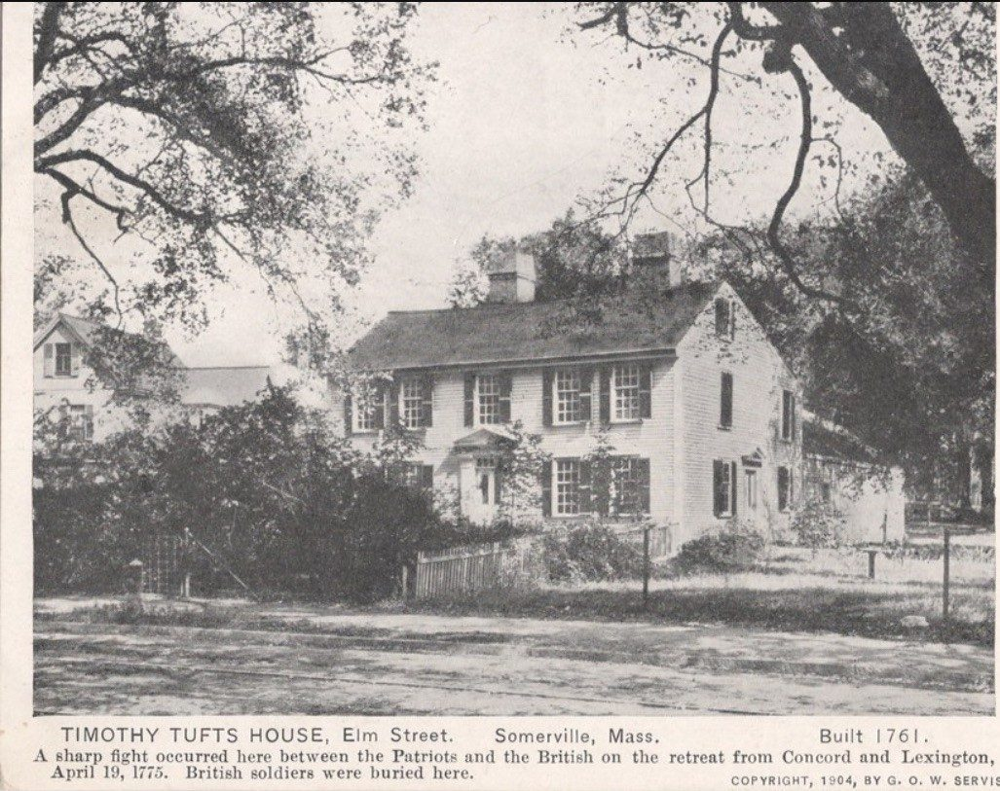
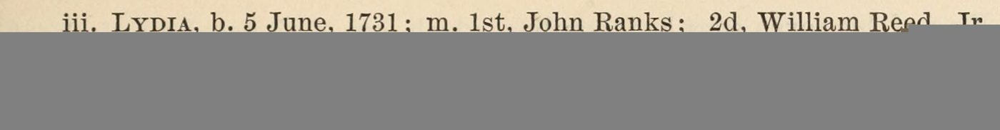

Biography
“Timothy, the third son of Peter of Milk Row, who was born in 1735, received from his father a farm on Elm street, at the corner of Willow avenue.”
Edward C. Booth, “The Tufts Family in Somerville,” Historic Leaves (Somerville Historical Society), vol. 1 (1902–03), p. 25. Text (Perseus)
“This house was built about a year before the Revolution, and replaced an older one which stood on a knoll by a large elm tree somewhat farther back from the street. Timothy Tufts was a prominent man in public affairs. He was frequently chosen moderator of the town meeting and was a selectman for most of the years between 1780 and 1792. He is always spoken of in the records as Timothy Tufts , Esquire , and his commission as justice of the peace, signed by Governor John Hancock , may be still seen hanging in the sitting-room of the old house.”
Edward C. Booth, “The Tufts Family in Somerville,” Historic Leaves (Somerville Historical Society), vol. 1 (1902–03), p. 25. Text (Perseus)
On the afternoon of April 19, 1775, Lord Percy’s column, falling back from Lexington and Concord, turned off toward Charlestown and passed his door on the road now called Elm Street. The historian of the day’s fighting describes what happened there:
“Near the corner of Beech Street, and on the easterly side of Elm Street, stood the house of Timothy Tufts. Here Percy halted his army while his two field pieces were dragged up the hill back of the Tufts house and discharged toward his pursuers, with the usual result of his cannonading, - none killed. From out a grove a little way up the road came a scattering fire of American sharpshooters, and in consequence quite a number of Britons were killed. They fell in the road, just in front of the Tufts house, and a tablet there marks where they were buried.”
Frank Warren Coburn, The Battle of April 19, 1775 (1912), p. 150 (quoted from the transcription at battleroad.net; page scan not yet checked)
“A SHARP FIGHT OCCURRED HERE BETWEEN THE PATRIOTS AND THE BRITISH APRIL 19, 1775. THIS MARKS BRITISH SOLDIERS’ GRAVES. The house in front of which this tablet stands was built by Timothy Tufts, and was a witness of the “ sharp fight.””
John W. Freese, Historic Houses and Spots in Cambridge, Massachusetts, and Near-by Towns (1897), Somerville section (page not recorded; transcription). The tablet survives at Elm Street near Beech Street (HMdb marker 103186).
He served Charlestown’s Milk Row school as a committeeman from 1776 (Historic Leaves, vol. 3, pp. 90–93). See also the Timothy Tufts house on Places.
The House on Elm Street

A postcard copyrighted in 1904 by G. O. W. Servis shows the house standing behind its fence on Elm Street. The family record describes the farm on Milk Row (Elm Street near Willow Avenue), Anne Tufts watching from her bedroom as the column halted to drink at their well on the night of April 18, and the British dead buried in a common grave in the front yard, where a marker in the sidewalk identifies the site (Tufts Kinsmen, Vol. I, p. 52, no. 18-4).
The family record also settles his dates. He was born at Charlestown on January 20, 1734/5, which explains why some lists say 1734 and others 1735. He married Anne Adams, daughter of Dea. Joseph Adams Jr. and Martha (Frost) Adams of Menotomy, at Cambridge on May 7, 1761. He died at Charlestown on February 18, 1805 (Tufts Kinsmen, Vol. I, p. 52).
In the DAR Records
The DAR lists him as DAR Ancestor no. A116816: patriotic service, Massachusetts, “Charlestown, loaned money to government”; born January 20, 1734, and died February 18, 1805, at Charlestown.
Service Record
Town: Charlestown (now Somerville), Mass. · Dates: 1735–1805
Civil: moderator, selectman (most years 1780–1792) and justice of the peace (Booth, p. 25). No military service record has yet been matched to him in Massachusetts Soldiers and Sailors.
Family Connection
“Timothy married Anne Adams , a niece of the wife of his brothers, Nathan and Peter . They had sons Timothy, Abijah, Isaac, and Joseph.”
Edward C. Booth, “The Tufts Family in Somerville,” Historic Leaves (Somerville Historical Society), vol. 1 (1902–03), p. 25. Text (Perseus)
“68 Timothy, b. Jan. 20, 1735.”
Charles Brooks, History of the Town of Medford (1855), Register of Families, p. 545. Page scan · Text (Perseus), among the children of Peter Tufts of Milk Row and Lydia Buckman
Father: Peter Tufts of Milk Row (d. Dec. 5, 1776). Mother: Lydia Buckman (Brooks, p. 545). The Register names her “Lydia, daughter of Joses and Judith (Worth) Bucknam of Maiden [Malden]” and records the father, born “in Charlestown, 10 May, 1697,” as dying “5 December, 1776” (Larkin T. Tufts and Edward C. Booth, “Tufts Genealogy—Earlier Generations,” NEHGR 51 (July 1897), pp. 301, 304). It gives Timothy’s birth as “20 Jan., 1734” (p. 305), against Brooks’s Jan. 20, 1735; the difference is probably Old Style year reckoning (1734/5). Brothers include Nathan (b. 1724), who married Mary Adams, and Peter of Winter Hill (b. 1728), who married Anne Adams (see Peter Tufts of Winter Hill
(b. 1728), who married Anne Adams (see Peter Tufts of Winter Hill ). Peter Tufts of Winter Hill
). Peter Tufts of Winter Hill was the father of Peter Tufts Jr. (1753–1832)
was the father of Peter Tufts Jr. (1753–1832) , Timothy’s nephew. Booth (p. 25) says his eldest son Timothy Jr. “died in 1802, three years before his father,” which places the elder Timothy’s death in 1805.
, Timothy’s nephew. Booth (p. 25) says his eldest son Timothy Jr. “died in 1802, three years before his father,” which places the elder Timothy’s death in 1805.

… iii. Lydia, b. 5 June, 1731 ; m. 1st, John Ranks ; 2d, William Reed, Jr. 43. iv. Timothy, b. 20 Jan., 1734; m. Anne Adams. 44. v. Samuel, b. 24 Nov., 1737; m. Martha Adams. 45. vi. Aaron, b. 16 Dec., 1739; m. Mary Stone …
Transcription of the clipping above: “Tufts Genealogy—Earlier Generations,” New England Historical and Genealogical Register 51 (July 1897), p. 305. View the page scan
Father: Peter Tufts (1697–1776), “Peter of Milk Row.”
Relatives with profiles on this site: great-grandfather Peter Tufts the immigrant; nephew Peter Tufts Jr. (1753–1832) ; father Peter Tufts (1697–1776); sister-in-law Anne Adams Tufts
; father Peter Tufts (1697–1776); sister-in-law Anne Adams Tufts ; nephew John Tufts
; nephew John Tufts ; nephew/niece Ann Tufts Richardson (b. 1757); nephew/niece Elizabeth Tufts Swan (b. 1758); nephew/niece Joseph Tufts (b. 1760); nephew/niece Lydia Tufts Gray (b. 1762); nephew/niece Asa Tufts (1764–1828); nephew/niece Thomas Tufts of Lexington (1766–1830); nephew/niece Lucy Tufts Osgood (b. 1767); nephew/niece Rebecca Tufts Adams (1769–c. 1848); nephew/niece Sarah Tufts Adams; brother Peter Tufts of Winter Hill
; nephew/niece Ann Tufts Richardson (b. 1757); nephew/niece Elizabeth Tufts Swan (b. 1758); nephew/niece Joseph Tufts (b. 1760); nephew/niece Lydia Tufts Gray (b. 1762); nephew/niece Asa Tufts (1764–1828); nephew/niece Thomas Tufts of Lexington (1766–1830); nephew/niece Lucy Tufts Osgood (b. 1767); nephew/niece Rebecca Tufts Adams (1769–c. 1848); nephew/niece Sarah Tufts Adams; brother Peter Tufts of Winter Hill ; brother Samuel Tufts of Milk Row (1737–1828)
; brother Samuel Tufts of Milk Row (1737–1828) .
.
Spouse(s)
- Anne (Anna) Adams. Marriage date and place not found.
“38-68 TIMOTHY Tufts m. Anna ----, and had--”
Charles Brooks, History of the Town of Medford (1855), Register of Families, p. 547. Page scan · Text (Perseus)
Booth (p. 25) gives her surname as Adams, “a niece of the wife of his brothers.”
The Arlington register supplies the date of the marriage: Anna, daughter of Deacon Joseph Adams of Menotomy, born December 14, 1740, “m. Timothy Tufts of Medford 7 (19) May, 1761 (d. 8 Oct. 1825)” (Benjamin and William R. Cutter, History of the Town of Arlington, Massachusetts (1880), p. 185. Internet Archive). The two dates are the Old Style and New Style forms of the same day.
Authoritative IDs / Index Numbers
| Source | ID / status |
|---|---|
| Perseus person index (auth=) | auth=tufts,timothy. This is a name-level key shared by every Timothy Tufts in Perseus, not a personal ID. Use it with the passages cited on this page. |
| Find a Grave memorial | Note: Pending further work. |
| Brooks, History of Medford (1855) register no. | No. 68 / 38-68, p. 545, 547 |
| Mass. Soldiers and Sailors | Not yet checked for this page |
| DAR ancestor no. | A116816 (DAR Ancestor Database) |
| FamilySearch ID | Note: Pending further work. |
| Geni profile | Note: Pending further work. |
| WikiTree ID | Tufts-41, as linked from his father’s profile Tufts-199 (secondary, compiled) |
| Town / vital records | Brooks’s register (above) is drawn from Medford town and church records; printed VR volume and page not yet checked |
Only IDs confirmed against dates and family are given as matches. “Not yet checked” means the source has not been searched; “Checked, not found” means it was searched without a match.
⚑ Unverified
Which Timothy: the 1775 house was the elder Timothy’s (b. 1735). His son Timothy Jr. (d. 1802) lived on Broadway, and a grandson Timothy owned the Elm Street house in 1897–1903. Build date conflict: Booth says the house was built “about a year before the Revolution”; a modern Historypin caption and the 1904 Servis postcard both say 1761, the year of his marriage. “One of the heaviest engagements of the retreat” is not stated in any source seen. Coburn calls the cannon fire harmless and says “quite a number of Britons were killed”; the tablet calls it a “sharp fight.” Coburn and Freese are quoted from online transcriptions, not page scans. The house was demolished; Historypin gives 1904.
Further Details from Additional Sources
Chase’s account of April 19 adds two scenes at his house. In the small hours, as the British marched out toward Lexington:
“After this there was no dwelling until Timothy Tufts's was reached on Elm Street, near Willow Avenue. There the dog barked and Mrs. Tufts roused and saw from her bed the gun-barrels glistening in the moonlight. She woke her husband and they saw the soldiers halt and drink from their well. Then they turned into Beech Street and disappeared.”
Ellen Chase, The Beginnings of the American Revolution (1910), vol. II, p. 355. Page (Internet Archive)
And on the retreat that evening:
“The troops here planted their cannon on the northerly spur of Spring Hill, behind Timothy Tufts' house, and won a short respite. … Leaving a few dead, now buried in Mr. Tufts' lot, just inside the fence, the troops crowded on down Elm Street into Somerville Avenue.”
Ellen Chase, The Beginnings of the American Revolution (1910), vol. III, p. 166. Page (Internet Archive)
His wife was a niece of his sisters-in-law: the Somerville Historical Society notes that of Deacon Joseph Adams’s children “Anna became the wife of Timothy Tufts, another brother of Peter, Jr., and Hannah married Peter Tufts, the third” (Historic Leaves (Somerville Historical Society), vol. 3 (1904–05), “Charlestown Schools…,” p. 89. Text (Perseus)). See Anne Adams Tufts .
.
“Samuel Tufts occupied an old gambrel-roofed house, later General Green's headquarters, on the west side of the road, near Laurel Street. He was running bullets with his negro, in a small hut back of the house, and did not hear the Regulars, but Widow Elizabeth Rand … is said to have run in her night-clothes to tell Tufts. He instantly saddled his horse and galloped across his farm to Cambridge with the news”
Ellen Chase, The Beginnings of the American Revolution (1910), vol. II, p. 355. Page (Internet Archive) (Samuel Tufts of Milk Row, Timothy’s brother, b. 1737.)
Links and Resources
Every source, record, map, survey, marker and artifact tied to this person, gathered in one place. Page numbers are given where a book is cited.
Maps, Surveys and Artifacts
- Siege of Boston plan (1776) — Shows the lines across the Charlestown mainland near his Elm Street house.
- Road from Concord to Cambridge survey (1797) — The road the British marched past his house on April 19, 1775, drawn by his grandnephew.
- — Timothy Tufts House, Elm Street, Somerville. Postcard, “Copyright, 1904, by G. O. W. Servis.” Its printed caption reads: “TIMOTHY TUFTS HOUSE, Elm Street. Somerville, Mass. Built 1761. A sharp fight o

Markers, Plaques and Places
- HMdb marker 103186 — John W. Freese, Historic Houses and Spots in Cambridge, Massachusetts, and Near-by Towns (1897), Somerville section (page not recorded; transcription). The tablet survives at Elm Street near Beech Stree
- the Timothy Tufts house on Places — He served Charlestown’s Milk Row school as a committeeman from 1776 (Historic Leaves, vol. 3, pp. 90–93). See als
Digitized Books and Journals
- Edward C. Booth, “The Tufts Family in Somerville,” Historic Leaves (Somerville Historical Society), vol. 1 (1902–03), p. 25. · Text (Perseus)
- Charles Brooks, History of the Town of Medford (1855), Register of Families, p. 545. · Page scan
- Charles Brooks, History of the Town of Medford (1855), Register of Families, p. 545. · Text (Perseus)
- Charles Brooks, History of the Town of Medford (1855), Register of Families, p. 547. · Page scan
- …daughter of Deacon Joseph Adams of Menotomy, born December 14, 1740, “m. Timothy Tufts of Medford 7 (19) May, 1761 (d. 8 Oct. 1825)” (Benjamin and William R. Cutter, History of the Town of Arlington, Massachusetts (1880), p. 185. · Internet Archive
- Ellen Chase, The Beginnings of the American Revolution (1910), vol. II, p. 355. · Page (Internet Archive)
- Ellen Chase, The Beginnings of the American Revolution (1910), vol. III, p. 166. · Page (Internet Archive)
- …Adams’s children “Anna became the wife of Timothy Tufts, another brother of Peter, Jr., and Hannah married Peter Tufts, the third” (Historic Leaves (Somerville Historical Society), vol. 3 (1904–05), “Charlestown Schools…,” p. 89. · Text (Perseus)
Archives, Letters and Records
- DAR Ancestor no. A116816 — The DAR lists him as
Biographies and Family Trees
Secondary and user-contributed sites; not verified here.
Related Pages on This Site
- Peter Tufts of Winter Hill
 — …1734” (p. 305), against Brooks’s Jan. 20, 1735; the difference is probably Old Style year reckoning (1734/5). Brothers include Nathan (b. 1724), who married Mary Adams, and Peter of Winter Hill (b. 1728), who married Anne Adams
— …1734” (p. 305), against Brooks’s Jan. 20, 1735; the difference is probably Old Style year reckoning (1734/5). Brothers include Nathan (b. 1724), who married Mary Adams, and Peter of Winter Hill (b. 1728), who married Anne Adams
Other Resources
- battleroad.net — Frank Warren Coburn, The Battle of April 19, 1775 (1912), p. 150 (quoted from the transcription a link not responding (checked 2026-11-04)
- John W. Freese, Historic Houses and Spots in Cambridge, Massachusetts, and Near-by Towns (1897), Somerville section (page not recorde · transcription
Related Places & Articles
Other pages on this site that mention Timothy Tufts (1735–1805).